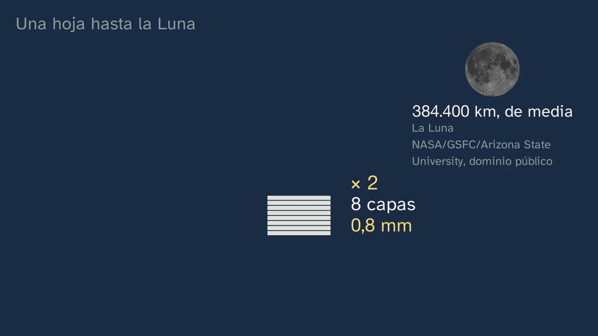
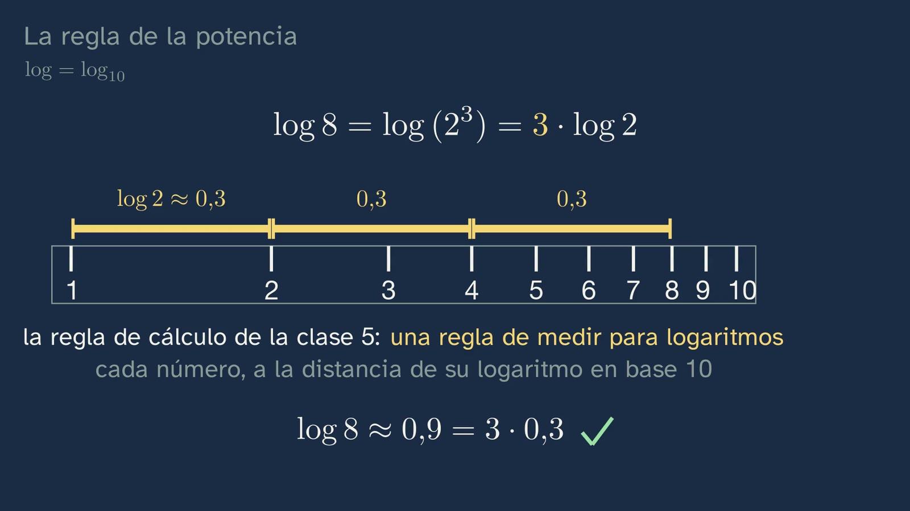
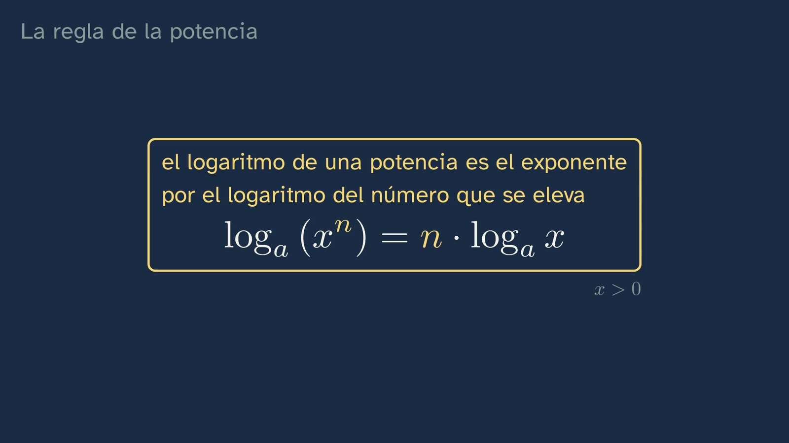

Propiedades de los logaritmos y cambio de base
En pocas palabras
La clase pregunta cómo se despeja un exponente, y llega antes el problema que la herramienta. Recupera de la clase 5 la regla del producto (log₂ (4 · 8) = 2 + 3 = 5), que hoy da la de la potencia, y corrige sus tres ejercicios en un minuto. El gancho es un experimento mental: ¿cuántas veces hay que doblar una hoja de 0,1 mm para que llegue a la Luna? La hoja se dobla en la pizarra, capa a capa: cada pliegue duplica las capas, así que tras n pliegues hay 2ⁿ, y hacen falta 3,844 · 10¹² para los 384.400 km de la distancia media. La incógnita está arriba, en el exponente, y no sale de cabeza; y como el log de la calculadora es en base 10, se anuncia un cambio de base en tres pasos: logaritmos en los dos lados, bajar el exponente y despejar. Para bajarla, la regla de la potencia, sacada de la del producto con los tres pliegues de la hoja, en base 10: log (2³) = log (2 · 2 · 2) = log 2 + log 2 + log 2 = 3 · log 2. Cuadra con la regla de cálculo de la clase 5, donde el 2 estaba a 0,3 y el 8 a 0,9: cada pliegue, el mismo tramo. Y va a su caja: el logaritmo de una potencia es el exponente por el logaritmo del número que se eleva, logₐ (xⁿ) = n · logₐ x, con x > 0 y con cualquier exponente. El error típico, confundir el logaritmo de una potencia con la potencia de un logaritmo, se desmonta con números: con el cubo dentro, 6; con el cubo fuera, 8. Con la regla, la hoja se resuelve, primero con un «ahora tú» (bajar la ene): logaritmos en los dos lados, n · log 2 = log (3,844 · 10¹²), n = 12,585 / 0,301 = 41,8, y con 41 no se llega: 42 pliegues, y se ve crecer a escala: la columna de papel pasa el Everest con 27, los 100 km del espacio con 30 y la Luna con 42. Para pensar: el último pliegue lo duplica todo. Y es un experimento mental: Britney Gallivan, estudiante de instituto, dobló doce veces una tira de más de un kilómetro en 2002. Esa cuenta era el cambio de base: log₂ 3 = log 3 / log 2 = 1,585, el número que la clase 5 dejó pendiente, y en su caja, en general, logₐ x = log_b x / log_b a, con otra base b cualquiera, la misma arriba y abajo (con la calculadora, b = 10), con su porqué de que la base no sea 1. Con la regla en su caja sale el ejercicio 3 de la clase 5: log₂ 10 = 1 / 0,301 = 3,32, entre 3 y 4. Cómo se teclea, también con la tecla que tiene un hueco para la base, y el otro error: log x / log a no es log (x / a). Y al final, en breve, la física: el carbono 14, que se queda en la mitad cada unos 5700 años («la hoja al revés»); queda un décimo cuando 2ᵏ = 10, tras log₂ 10 = 3,32 periodos, casi 19.000 años. Las reglas de los logaritmos, en una tarjeta, y la pregunta abierta: ¿por qué nos engaña tanto la intuición con lo que crece multiplicando?
Objetivo. Al terminar, el alumnado sabrá deducir la propiedad de la potencia de los logaritmos (el exponente baja y multiplica) y aplicarla con las del producto y el cociente, despejar un exponente desconocido y calcular cualquier logaritmo con la calculadora mediante el cambio de base.
Cómo se hizo. Con lo que el canal aprendió en la clase 5 (las notas de Ginés, el responsable del canal): cada regla en su caja, en palabras y en símbolos, dicha despacio y antes de usarla (ADR-144); cada concepto, con lo que tiene dentro (ADR-149); las matemáticas primero y la aplicación de la física al final, breve y deducida con las reglas (ADR-145, 146 y 151); las soluciones, en torno a un minuto (ADR-148). Antes de diseñarla se miraron los mejores vídeos de YouTube del tema (Eddie Woo, Khan Academy, Susi Profe, Matemáticas profe Alex, 3Blue1Brown, Mathologer, TED-Ed): ninguno resuelve con logaritmos cuántos pliegues hacen falta y ninguno desmonta con números los dos errores típicos. El guion lo revisó un agente independiente con la rúbrica del canal, y sus nueve cambios obligatorios están aplicados (sobre todo, frases que al oído se entendían de dos maneras). El primer borrador del vídeo lo revisaron otros dos, uno de contenido y voz y otro sólo de grafismos, y lo que vieron está corregido: que cada línea de la pizarra llegue con sus palabras, que nada se pise y que todo se lea en un móvil. Y al ver el tercero, Ginés notó que de la pregunta de la hoja a su respuesta la explicación se hacía compleja: había dos maneras de descubrir la regla, otra regla de las potencias para probarla, una prueba con letras y un cálculo de cabeza, seis minutos entre la pregunta y la respuesta. Se rehízo pensando en el alumno: una sola explicación, la de la regla del producto con los tres pliegues, comprobada en la regla de cálculo, y la hoja resuelta enseguida, unos tres minutos. Lo revisó otro agente, leyéndolo como un alumno de 16 años que oye el vídeo una vez, y lo que encontró está corregido (la base 10 dicha en voz, el error típico que al oído sonaba igual que el acierto). La prueba general de la regla, con letras, queda en «A fondo». Al ver el cuarto, Ginés notó que el sentido de la división en la regla de cálculo no se entendía: cruzaba dos bases, tramos medidos en base 10 para contar un logaritmo en base 2. Salió del vídeo y queda también en «A fondo»; el ejercicio 3 de la clase 5 se resuelve directamente con la regla en su caja. Al ver el quinto, Ginés pidió seis cosas: decir qué es la regla de cálculo (una regla de medir para logaritmos, la de la clase anterior); la caja del cambio de base antes de las cuentas que la usan, que salían «sacadas de la manga», y en pequeño a la vista donde se usa; que la voz dijera lo que está escrito en (1/2)ᵏ = 1ᵏ/2ᵏ = 1/2ᵏ; que las otras ciencias tuvieran su para qué («¿cuántos bits hacen falta para qué?»); y una calculadora dibujada en grande, con sus teclas. Al dibujarla se comprobó en los manuales de Casio y de Texas Instruments que la tecla log abre un paréntesis que hay que cerrar tras el número, y el vídeo lo enseña. Otro agente lo volvió a leer como un alumno que lo oye una vez, y lo que encontró está corregido (por ejemplo, «un décimo», que al oído sonaba a lotería, y «la regla», que ya podía ser la de cálculo). Y antes de verlo, Ginés pidió que quedara claro que con logaritmos se calcula más rápido que yendo multiplicando: «si parece más complejo que solo ir multiplicando cada vez y dividiendo, vamos mal». La clase lo dice al plantear la hoja y lo enseña tras el 41,8: más de cuarenta multiplicaciones frente a una división. Con la calculadora, ir doblando cuarenta y dos veces también se puede; lo que no da es la respuesta de una vez, ni para cualquier distancia, ni con decimales (el 41,8, o los 3,32 periodos del carbono 14, que multiplicando sólo dirían «entre 3 y 4»). Al ver el borrador 7, Ginés pidió ocho retoques: las filas de los pliegues, todas con el mismo formato (2 = 2¹, 4 = 2 · 2 = 2², 8 = 2 · 2 · 2 = 2³), para que se vea de dónde sale 2ⁿ; anunciar, al ver que el logaritmo en base 2 no sale de la calculadora, que se hará un cambio de base y cómo, en tres pasos; decir qué es «el número» (son las capas que hacen falta para llegar a la Luna, la distancia en milímetros entre la décima de milímetro de cada capa); quitar «con la Luna al doble de lejos, un pliegue más», que confundía; escribir el cambio de base en general, con otra base b arriba y abajo; enseñar la cadena de teclas de la tecla con hueco para la base (comprobada en los manuales de Casio); y dos arreglos de la pizarra (un contador que pisaba la regla y una leyenda demasiado pegada).
Las palabras. «Logaritmo de una potencia», logₐ (xⁿ), frente a «potencia de un logaritmo», (logₐ x)ⁿ: la clase las dice así para que no se confundan al oído. «Cambio de base»: escribir un logaritmo en una base con logaritmos en otra. «log», sin base, es el de base 10, el de la calculadora; «ln», el de base e, que llega en el tema 12. «Periodo de semidesintegración»: el tiempo que tarda en desintegrarse la mitad de los átomos de una muestra radiactiva.
Currículo
Real Decreto 243/2022, Matemáticas I, materia de la modalidad de Ciencias y Tecnología de 1.º de Bachillerato (texto consolidado del BOE; el anexo de Matemáticas no ha cambiado desde 2022). Los minutos son los del vídeo.
| Elemento | Qué dice el decreto | Dónde se trabaja |
|---|---|---|
| Saber básico A.1 (A. Sentido numérico, 1. Sentido de las operaciones) | «Estrategias para operar con números reales y vectores: cálculo mental o escrito en los casos sencillos y con herramientas tecnológicas en los casos más complicados.» | log 8 ≈ 0,9 = 3 · 0,3, en la regla de cálculo (5:01); log₂ 3, log₂ 10 y log₃ 20 con la calculadora y el cambio de base (9:38, 10:30, 12:01) |
| Saber básico D.3 (D. Sentido algebraico, 3. Igualdad y desigualdad) | «Resolución de ecuaciones, inecuaciones y sistemas de ecuaciones e inecuaciones no lineales en diferentes contextos.» | 2ⁿ = 3,844 · 10¹², la hoja que llega a la Luna (6:56); (1/2)ᵏ = 1/10, el carbono 14 (13:19); la bacteria del ejercicio 3 |
| Saber básico D.4 (D. Sentido algebraico, 4. Relaciones y funciones) | «Propiedades de las distintas clases de funciones, incluyendo, polinómicas, exponenciales, irracionales, racionales sencillas, logarítmicas, trigonométricas y a trozos: comprensión y comparación.» | Lo prepara: las propiedades de los logaritmos son las de la función logarítmica, en el tema 12 |
| Saber básico F.1 (F. Sentido socioafectivo, 1. Creencias, actitudes y emociones) | «Tratamiento del error, individual y colectivo como elemento movilizador de saberes previos adquiridos y generador de oportunidades de aprendizaje en el aula de matemáticas.» | log (xⁿ) ≠ (log x)ⁿ (6:01) y log x / log a ≠ log (x / a) (10:56) |
| Criterio 1.1 | «Manejar algunas estrategias y herramientas, incluidas las digitales, en la modelización y resolución de problemas de la vida cotidiana y de la ciencia y la tecnología, evaluando su eficiencia en cada caso.» | La hoja, modelizada (2ⁿ capas) y resuelta (2:30–7:50); la calculadora y su tecla de base (11:30) |
| Criterio 2.1 | «Comprobar la validez matemática de las posibles soluciones de un problema, utilizando el razonamiento y la argumentación.» | 41 pliegues no llegan y 42 sí (8:14); log₂ 3 = 1,58, el de la clase 5 (9:57); log₃ 20 cae en (2, 3) (12:19) |
| Criterio 5.1 | «Manifestar una visión matemática integrada, investigando y conectando las diferentes ideas matemáticas.» | La regla de la potencia sale de la del producto (4:28–5:01); el cambio de base resuelve el ejercicio 3 de la clase 5 (10:30); los intervalos de la clase 4, para comprobar (12:01) |
| Criterio 6.1 | «Resolver problemas en situaciones diversas, utilizando procesos matemáticos, estableciendo y aplicando conexiones entre el mundo real, otras áreas de conocimiento y las matemáticas.» | La hoja hasta la Luna y el carbono 14 (12:46) |
| Criterio 8.2 | «Reconocer y emplear el lenguaje matemático en diferentes contextos, comunicando la información con precisión y rigor.» | El logaritmo de una potencia frente a la potencia de un logaritmo, dicho y escrito (6:01) |
| Criterio 9.1 | «Afrontar las situaciones de incertidumbre identificando y gestionando emociones y aceptando y aprendiendo del error como parte del proceso de aprendizaje de las matemáticas.» | La apuesta de los pliegues (2:16) y los dos errores típicos |
Competencias específicas 1, 2, 5, 6, 8 y 9. La clase sirve también a Matemáticas Aplicadas a las Ciencias Sociales I: «Potencias, raíces y logaritmos: comprensión y utilización de sus relaciones para simplificar y resolver problemas» (A.3 de esa materia). Y conecta con Física y Química (la radiactividad, que se estudia en Física de 2.º) y con Biología (el crecimiento de una población).
Lo que hay que traer. De la ESO: las potencias y sus reglas, la notación científica y la calculadora. De la clase 5: qué es un logaritmo, las reglas del producto y del cociente, log = log₁₀ y la regla de cálculo. De la clase 4: los intervalos.
Cómo está construida la clase
Capítulos del vídeo
Unos 16 minutos (16:35), en 9 capítulos, con un hilo: cuando lo que no sabes está en el exponente, el logaritmo lo baja. Primero las matemáticas, y la física al final. Cada regla va en su caja amarilla, con sus palabras y sus símbolos, y se dice despacio antes de usarla; en las explicaciones de detalle, la voz va un 10 % más lenta. Tiene una parada para pensar (el último pliegue, 8:14). Ximena sale a cámara cuatro veces, unos veinticinco segundos en total: al saludar, con el gancho (1:46), a mitad (8:53) y al despedirse (16:29).
| Capítulo | Qué pasa | Por qué así |
|---|---|---|
| Qué vamos a ver (0:00) | Ximena saluda. El mapa de las seis clases del tema, con la sexta resaltada, y la pregunta: «¿Cómo se despeja un exponente?». | El tema 1 conserva su mapa numerado. |
| Lo que ya sabes (0:13) | ¿A qué es igual el logaritmo de un producto?, con log₂ (4 · 8) de ejemplo. Un silencio corto, sin contador. La regla en su caja y 2 + 3 = 5, comprobado (0:27). | Recuperar lo que hoy hace falta: de la regla del producto sale la de la potencia (ADR-147 y 150). |
| Las soluciones de la clase anterior (0:44) | log₃ 81 = 4, contando treses; 80 frente a 50 dB, × 1000 (1:04); log₂ 10 en (3, 4) (1:23). | Breves, con su enunciado a la vista (ADR-148). |
| Una hoja hasta la Luna (1:46) | El gancho, a cámara. La hoja se dobla en la pizarra: 2, 4 y 8 capas (1:55). La apuesta, con contador (2:16). Las capas, fila a fila y con el mismo formato (2 = 2¹, 4 = 2 · 2 = 2², 8 = 2 · 2 · 2 = 2³), 2ⁿ, y las que hacen falta, las capas hasta la Luna: 2ⁿ = 3,844 · 10¹² (2:30). La incógnita, en el exponente: ir multiplicando por dos no dice cuántas veces, y con un logaritmo es una sola cuenta (3:36); el log de la calculadora es en base 10, así que se anuncia un cambio de base, en tres pasos numerados (logaritmos en los dos lados, bajar el exponente, despejar). | El problema antes que la herramienta (artículo 15; Kapur, 2008), y explicar con el objeto: la hoja de verdad, capa a capa. |
| La regla de la potencia (4:28) | En base 10, la de la calculadora. Los tres pliegues: 2³ = 2 · 2 · 2, y con la regla del producto, a la vista en su caja, log (2³) = log 2 + log 2 + log 2 = 3 · log 2: el 3 baja delante del logaritmo. En la regla de cálculo de la clase 5, el 2 a 0,3 y el 8 a 0,9, tres tramos iguales (5:01). En su caja (5:36). El error típico, con el cubo dentro y fuera (6:01). | De lo concreto a la regla, y la regla antes que su uso (ADR-144). Una sola explicación, con la hoja y con lo que el alumno ya tiene: la regla del producto y la regla de cálculo. |
| Cuarenta y dos pliegues (6:33) | Logaritmos en los dos lados, y un «ahora tú»: bajar la ene, con la regla a la vista y un contador. La n baja y se despeja (6:56). n = 12,585 / 0,301 = 41,8 (7:12), y las apuestas, tachadas. Lo que nos hemos ahorrado: más de cuarenta «× 2», mirando cada vez si ya llega, frente a una sola división, la misma con cualquier distancia (7:34). Con 41 no se llega: 42 pliegues, y la columna que crece a escala: el Everest, el espacio, la Luna (7:50). Para pensar: el último pliegue (8:14). Un experimento mental, con Britney Gallivan (8:31). Ximena a mitad (8:53). | Responde a la apuesta del alumno con una animación a escala (artículo 17.3 y 17.7): que se sienta el tamaño. |
| El cambio de base (9:00) | La cuenta de la hoja era el cambio de base anunciado, y la regla va enseguida a su caja, en general: logₐ x = log_b x / log_b a, con otra base b cualquiera, la misma arriba y abajo; con la calculadora, b = 10 (9:00); x y la base, positivas, y por qué la base no puede ser 1 (9:38). Después, las cuentas, con la caja a la vista: log₂ 3 = log 3 / log 2 = 1,58, el número de la clase 5 (9:57), y el ejercicio 3 de la clase 5: log₂ 10 = 1 / 0,301 = 3,32, en (3, 4) (10:30). En una calculadora dibujada, cómo se teclea (la tecla log abre un paréntesis, que se cierra tras cada número) y el segundo error (10:56). La tecla con hueco para la base, con su cadena de teclas (log▪□, la base, ▶, el número, =), y el ln (11:30). Para y piensa: log₃ 20, con la regla en pequeño a la vista (12:01–12:19). | La regla en su caja antes de las cuentas que la usan, y a la vista mientras se usa (ADR-144 y ADR-188); probada con un número conocido y usada enseguida en un ejercicio que el alumno ya empezó. Su sentido en la regla de cálculo, en «A fondo»: en el vídeo cruzaba dos bases y no se entendía (ADR-188). |
| Para qué sirve: el carbono 14 (12:46) | Cada unos 5700 años, la mitad: (1/2)ᵏ = 1/2ᵏ, cada paso dicho como se escribe. La décima parte cuando 2ᵏ = 10: tras log₂ 10 = log 10 / log 2 = 3,32 periodos, casi 19.000 años (13:19). Otras ciencias, cada una con su para qué: las bacterias del ejercicio 3 y los 30 bits de un teléfono de nueve cifras (14:10). | La física, al final, breve y deducida con las reglas (ADR-146 y 151). |
| Para practicar y seguir pensando (14:44) | Las reglas de los logaritmos, en una tarjeta, con los dos errores. Tres ejercicios (15:26). La pregunta abierta (15:58). El tema siguiente (16:16) y la despedida. | Las soluciones abren la clase siguiente. |
Puentes con otras materias. Física: la radiactividad (2.º). Biología: el crecimiento de una población (el ejercicio 3). Informática: cada bit duplica los números posibles, como cada pliegue las capas, así que los bits son un logaritmo en base 2: un teléfono de nueve cifras pide log₂ 10⁹ = 29,9, 30 bits (14:10).






Plan de una sesión de 50 minutos
Pensado para ver el vídeo en clase, a trozos, con la hoja del alumnado.
| Minutos | Qué se hace |
|---|---|
| 0–5 | Sin vídeo, en parejas: «Antes de ver el vídeo», en la hoja. Cada pareja apunta su apuesta de pliegues hasta la Luna. |
| 5–12 | Vídeo hasta 4:28 (las soluciones, la hoja y la incógnita en el exponente). |
| 12–20 | Vídeo hasta 6:56. Se para tras la caja de la regla (5:36) para copiarla, y en el «ahora tú» (6:33): que cada pareja baje la ene antes de seguir. |
| 20–27 | Vídeo hasta 9:00: la hoja resuelta. Se comparan las apuestas con el 42. |
| 27–35 | Vídeo hasta el final. |
| 35–45 | La actividad de los pliegues de verdad o la del cambio de base con la regla de papel (abajo), o los ejercicios de la hoja. |
| 45–50 | Puesta en común de la pregunta abierta. |
Errores típicos y cómo se tratan
- «log (xⁿ) = (log x)ⁿ.» Es el de la clase (6:01). Se desmonta con números: log₂ (4³) = 3 · log₂ 4 = 6, pero (log₂ 4)³ = 2³ = 8. Ayuda leerlo en voz alta como lo dice la clase: «el logaritmo de la potencia», con el cubo dentro, frente a «la potencia del logaritmo», con el cubo fuera, y fijarse en dónde va el paréntesis.
- «log x / log a = log (x / a).» El segundo de la clase (10:56), muy frecuente al teclear: log 3 / log 2 = 1,585, pero log (3 / 2) = 0,176. El cambio de base es un cociente de logaritmos, no el logaritmo de un cociente. Al teclear hay otro tropiezo: la tecla log abre un paréntesis, y si no se cierra tras el 3, la calculadora entiende log (3 ÷ log 2) = 0,998. También se ve «log x / log a = log x − log a», que confunde el cociente de logaritmos con el logaritmo del cociente.
- Bajar el exponente cuando no es de todo el argumento: log (2 · 3²) = 2 · log (2 · 3), en lugar de log 2 + 2 · log 3. La regla de la potencia sólo vale si la potencia es todo lo que está dentro del logaritmo.
- Quedarse con 41,8 pliegues, o redondear a 41. Los pliegues van de uno en uno y con 41 no se llega: la solución del problema es 42 (8:14). Es un buen momento para el criterio 2.1.
- «El cambio de base sólo vale con la base 10.» Vale con cualquier base, siempre la misma arriba y abajo: con ln da lo mismo (11:30).
- Usar la regla con x ≤ 0. log ((−2)²) existe (log 4), pero 2 · log (−2) no: la regla pide x > 0.
Preguntas y soluciones
Para y piensa (dentro del vídeo)
- ¿A qué es igual el logaritmo de un producto? Por ejemplo, log₂ (4 · 8). (0:13, sin contador) A la suma de los logaritmos: 2 + 3 = 5, y 4 · 8 = 32 = 2⁵.
- Tu apuesta: ¿cuántos pliegues hasta la Luna? (2:16) La respuesta es 42. Es habitual apostar miles o millones.
- Ahora tú: baja la ene. (6:33) log (2ⁿ) = n · log 2, por la regla de la potencia; así que n · log 2 = log (3,844 · 10¹²).
- log₃ 20: primero, ¿entre qué dos enteros?; después, con la calculadora. (12:01) 3² = 9 < 20 < 27 = 3³: en (2, 3). log 20 / log 3 = 1,301 / 0,477 = 2,727.
La parada para pensar
- El último pliegue (8:14). Con 41 pliegues, la hoja mide 219.902 km, el 57 % de la distancia; el 42 la duplica, 439.805 km. El último pliegue sube él solo tanto como todos los anteriores juntos. Para ir más allá en el aula: como n = log₂ (capas), si las capas se multiplican por 2, n suma 1 (regla del producto), así que con la Luna al doble de lejos bastarían 43 (en el vídeo se quitó: al oído, de pasada, confundía). Y: la Luna está entre unos 363.300 km (perigeo) y 405.500 km (apogeo) de nosotros, así que con 41 no se llega nunca y con 42 siempre (NASA, «Moon Fact Sheet»).
Para practicar (las soluciones abren la clase siguiente, la primera del tema 2)
- 2 · log 5 + log 4, sin calculadora. 2: por la regla de la potencia, 2 · log 5 = log 25; por la del producto, log 25 + log 4 = log 100 = 2. Lo que saldrá: log 9 (sumar 5 + 4 dentro del logaritmo); 2 · log 9.
- log₂ 1000, con la calculadora; antes, ¿entre qué dos enteros? 2⁹ = 512 < 1000 < 1024 = 2¹⁰: en (9, 10). log 1000 / log 2 = 3 / 0,30103 = 9,966. Lo que saldrá: 2,699 (teclear log (1000 / 2)); 0,1003 (dividir al revés, log 2 / log 1000).
- Una bacteria se divide en dos cada 20 minutos; empezando con una, ¿cuándo hay más de un millón? Tras n divisiones hay 2ⁿ bacterias; 2ⁿ = 10⁶ da n = 6 / log 2 = 19,93, así que hacen falta 20 divisiones (2¹⁹ = 524.288 y 2²⁰ = 1.048.576): 20 · 20 = 400 minutos, 6 h 40 min. Es un modelo: 20 minutos es lo más rápido que se divide Escherichia coli en un medio rico de laboratorio (Sezonov y otros, 2007), y ninguna población crece así mucho tiempo, porque se le acaba el alimento. Lo que saldrá: 19,93 minutos (olvidar multiplicar por 20); 6,64 horas (no pasar la parte decimal a minutos: 0,64 h no son 64 min).
De la hoja del alumnado
- Antes de ver el vídeo. 8 capas tras 3 pliegues; 1024 tras 10. 2³ = 2 · 2 · 2 = 8: tras 3 pliegues, 2³ capas. log₂ 8 = 3; log₂ (8 · 4) = 3 + 2 = 5.
- La regla de la potencia, con huecos. log₂ (8²) = 2 · log₂ 8 = 2 · 3 = 6, y 8² = 64 = 2⁶. log (10⁴) = 4. log₃ (9⁵) = 5 · log₃ 9 = 5 · 2 = 10.
- El cambio de base, con huecos. 5² = 25 < 30 < 125 = 5³: entre 2 y 3. log 30 / log 5 = 1,4771 / 0,6990 = 2,113.
- Uno más, con la hoja. 100 km = 10⁸ mm, así que hacen falta 10⁸ / 0,1 = 10⁹ capas; 2ⁿ = 10⁹ da n = 9 / log 2 = 29,9: 30 pliegues.
- Uno más, con el error. log (2⁵) = 5 · log 2 = 1,5051 (es log 32); (log 2)⁵ = 0,30103⁵ = 0,0025. El exponente de dentro baja a multiplicar; no eleva el logaritmo.
- Un reto, sin calculadora. 2⁴² = 4 · (2¹⁰)⁴ ≈ 4 · (10³)⁴ = 4 · 10¹² capas; por 0,1 mm, 4 · 10¹¹ mm = 400.000 km: más que la distancia a la Luna (la cuenta exacta da 439.805 km).
Para seguir pensando. ¿Por qué nos engaña tanto la intuición con lo que crece multiplicando? La clase la deja abierta. Para el debate: en lo cotidiano, casi todo crece sumando (un paso más, un día más), y estimamos así; lo que se duplica una y otra vez se dispara al final, y el último paso pesa tanto como todos los anteriores juntos. Es la misma pregunta que la del ajedrez y el trigo, la de un interés compuesto o la de una epidemia en su comienzo. Si sale en el aula que «las personas no entendemos lo exponencial», conviene presentarlo como una pregunta de investigación, no como un hecho: la clase no da ningún estudio.
A fondo
La regla de la potencia con cualquier exponente. La clase la saca con un exponente entero (log 2³ = log 2 + log 2 + log 2) y dice que vale con cualquier exponente; hace falta, porque la ene de la hoja sale 41,8. La prueba general, para quien la pida: si x = aᵐ, m = logₐ x; entonces xⁿ = (aᵐ)ⁿ = aᵐ·ⁿ, y tomando logₐ en los dos lados, logₐ (xⁿ) = logₐ (aᵐ·ⁿ) = m · n = n · logₐ x. Usa la potencia de una potencia, (aᵐ)ⁿ = aᵐ·ⁿ, con m, que casi nunca es entero (log₂ 3 = 1,58…). En el borrador se enseñaba en el vídeo y se quitó: era el tramo que hacía compleja la clase. En el tema 2 se ve que a^(p/q) es la raíz q-ésima de a^p, definida para que las reglas sigan valiendo; los exponentes irracionales, como log₂ 3, se definen acercándose con fracciones (la recta sin huecos de la clase 3), y las reglas se conservan por continuidad. Con eso, log √x = ½ · log x es un caso de la regla de la potencia.
Qué significa la división del cambio de base. En la regla de cálculo de la clase 5, cada número está del 1 a la distancia de su log₁₀, y multiplicar por 2 es avanzar el tramo del 1 al 2, que mide 0,301. log₂ 3 cuenta las veces que hay que multiplicar por 2 para llegar al 3: los tramos del 1 al 2 que caben del 1 al 3, uno entero y algo más de la mitad de otro, 0,477 / 0,301 = 1,58. En la regla entera, las copias caen en el 2, el 4 y el 8, y la cuarta llegaría al 16: log₂ 10 = 1 / 0,301 = 3,32. Estuvo en el vídeo hasta el borrador 4 y salió: mezcla dos bases (longitudes en base 10 para contar un logaritmo en base 2) y, oído una sola vez, no se entendía. En el aula, con la regla de papel en la mano, sí se sigue (ver «El cambio de base con la regla de papel»).
42 pliegues de cabeza. 2¹⁰ = 1024 ≈ 10³, así que 2⁴⁰ = (2¹⁰)⁴ ≈ 10¹² y 2⁴² ≈ 4 · 10¹². Por 0,1 mm, unos 400.000 km. Es el mismo truco que da log 2 ≈ 0,3 (10 · log 2 = log 1024 ≈ 3), y el de la hoja del alumnado.
Britney Gallivan. En enero de 2002, cuando estaba en el penúltimo curso del instituto, dobló por la mitad, en una sola dirección, una tira de papel higiénico de unos 1200 m (4000 pies), en Pomona (California); Guinness World Records lo recoge como el récord de pliegues. Un mes antes, en diciembre de 2001, había deducido una fórmula para la longitud mínima de una tira que se dobla n veces en una dirección, L = (π t / 6)(2ⁿ + 4)(2ⁿ − 1), con t el grosor (Gallivan, 2002, publicada por la Historical Society of Pomona Valley; MathWorld, «Folding»). Con t = 0,1 mm y n = 12 salen unos 879 m. En 2011, unos alumnos de St. Mark's School (Massachusetts) llegaron a 13 pliegues con unos 16 km de papel, pegando tiras con cinta. La fórmula lleva 2ⁿ: cuántos pliegues permite una tira dada también se despeja con logaritmos.
El carbono 14, con más física. El periodo de semidesintegración hoy recomendado es de 5700 ± 30 años (LNHB/DDEP; OIEA); el clásico, 5730 ± 40 (Godwin, 1962). Los laboratorios calculan las «edades de radiocarbono» con el valor de Libby, 5568 años, por convención, y después las calibran, porque la proporción de carbono 14 del aire no ha sido siempre la misma. La clase sólo calcula cuánto tarda en quedar un décimo (unos 18.900 años), sin fechar ningún resto. El método llega hasta unos 50.000 años (Oxford Radiocarbon Accelerator Unit).
La calculadora. Las Casio fx-570SP X II y fx-991SP X II y las ClassWiz fx-82SP CW, fx-570SP CW y fx-991SP CW tienen una tecla de logaritmo con la base en un hueco («log▪□»); en algunas, el log sin base va con SHIFT. Con ella se teclea la base, la flecha a la derecha (▶) para pasar al otro hueco, el número e =: log₂ 16 = 4 es «log▪□ 2 ▶ 16 =», y sólo con la pantalla en modo natural (Casio, manuales de las fx-83GT CW y fx-991ZA PLUS II). Conviene que el alumnado lo compruebe con su modelo. En las Casio ClassWiz y en las TI-30X, la tecla log escribe «log(» y el paréntesis se cierra tras el número (Casio, manual de las fx-83GT X / fx-85GT X, «Calculation Priority Sequence»: las funciones con paréntesis, como log(, «require a closing parenthesis after the argument»; TI-30X Pro, «Logarithm and Exponential Functions»). Sólo el último paréntesis, justo antes del =, se puede omitir: por eso «log 3 ÷ log 2 =» sin cerrar el primero da log (3 ÷ log 2) = 0,998. El vídeo lo enseña en una calculadora dibujada, sin marca.
Dos actividades para el aula
Los pliegues de verdad (unos 15 minutos, en grupos). Cada grupo dobla por la mitad una hoja de papel normal tantas veces como pueda, y apunta las capas y cuánto mide de largo y de grueso cada vez (con una regla; desde el cuarto pliegue, el grosor se mide mejor en el montón). Después: ¿cuántas capas tiene tras su último pliegue? ¿Por qué cuesta tanto el siguiente? (Con cada pliegue, la mitad de largo y el doble de grueso: el grosor crece como 2ⁿ y la longitud se divide entre 2ⁿ.) Para quien quiera más: con la fórmula de Gallivan, ¿cuánto papel haría falta para 13 pliegues?
El cambio de base con la regla de papel (unos 20 minutos, en parejas; sirve la regla de cálculo de papel de la clase 5). Con la tira marcada a 10 cm por unidad de logaritmo, cada pareja mide con un compás o una tira de papel el tramo del 1 al 2 (3,0 cm) y cuenta cuántas veces cabe en el tramo del 1 al 3 (4,8 cm), del 1 al 5 (7,0 cm) y del 1 al 10 (10 cm). Después lo comprueba con la calculadora: log₂ 3 = 1,58; log₂ 5 = 2,32; log₂ 10 = 3,32. ¿Y si se mide con el tramo del 1 al 3? (log₃ x.)
Recursos abiertos
| Recurso | Qué es | Para qué |
|---|---|---|
| NASA, «Moon Fact Sheet» | Los datos de la Luna: distancia media, perigeo y apogeo, tamaño | Comprobar el 42 con la Luna más cerca y más lejos |
| MathWorld, «Folding» | La fórmula de Gallivan, con su referencia, en inglés | La actividad de los pliegues de verdad |
| Oxford Radiocarbon Accelerator Unit, «Radiocarbon dating» | Cómo funciona la datación por carbono 14, en inglés | La física de la aplicación, con más detalle |
| GeoGebra | Calculadora gráfica libre, con log(b, x) para cualquier base | Comprobar el cambio de base y dibujar 2ˣ y log₂ x |
| MacTutor (Universidad de St Andrews) | Biografías de Napier, Briggs y Stifel, en inglés | La historia de los logaritmos, con sus fuentes |
Lo que la clase deja fuera, y por qué
La clase tiene una pregunta, cómo se despeja un exponente, y lo que no la responde se queda fuera.
- La raíz, log √x = ½ · log x: es la regla de la potencia con n = ½, pero pide saber qué es un exponente fraccionario, que llega en la clase siguiente, la primera del tema 2.
- log_b a = 1 / log_a b, una consecuencia del cambio de base: para el aula, con log₂ 10 · log 2 = 1.
- El número e y el logaritmo neperiano (ln): el tema 12, con la función exponencial. La clase sólo dice que la tecla ln existe y que con ella el cambio de base sale igual.
- Las ecuaciones exponenciales y logarítmicas en general, y la función logarítmica: el tema 12.
Fuentes
- Real Decreto 243/2022, anexo II, Matemáticas, texto consolidado (BOE): https://www.boe.es/buscar/act.php?id=BOE-A-2022-5521. La ESO: Real Decreto 217/2022 (BOE): https://www.boe.es/buscar/act.php?id=BOE-A-2022-4975.
- La distancia a la Luna: NASA Science, «Moon Facts», y NASA NSSDC, «Moon Fact Sheet».
- El grosor del papel: fichas técnicas de papel de 80 g/m² (ISO 534), de 98 a 110 µm.
- Britney Gallivan: Guinness World Records, «Most times to fold a piece of paper»; MathWorld, «Folding»; Science News, «Folding paper in half twelve times».
- El carbono 14: LNHB/DDEP, tabla del C-14; OIEA, LiveChart of Nuclides; Oxford Radiocarbon Accelerator Unit.
- El Everest: medición de China y Nepal anunciada el 8/12/2020 (8.848,86 m). La línea de Kármán: Federación Aeronáutica Internacional (FAI), citada por National Geographic.
- E. coli: Sezonov, G., Joseleau-Petit, D. y D'Ari, R. (2007). Escherichia coli physiology in Luria-Bertani broth. Journal of Bacteriology, 189(23), 8746–8749.
- Kapur, M. (2008). Productive failure. Cognition and Instruction, 26(3), 379–424.
- Cada cuenta de esta ficha está comprobada ejecutándola con Python (
verificacion-datos.md).
Sobre esta clase
GinCol Lab es un canal gratuito de ciencia para curiosos. Ximena es un personaje ilustrado, no una persona real, y su voz es sintética: está generada por ordenador con Microsoft Azure AI Speech y no imita a ninguna persona conocida. La pizarra está animada con Manim. El guion y esta ficha los escribe una IA (Claude, de Anthropic) y los revisa una persona antes de publicarse. Cada dato está comprobado en dos fuentes o en la original, y cada cuenta ejecutándola. Las fotos de la Luna y de la Tierra son de la NASA, de dominio público. Las imágenes de esta ficha salen de la pizarra del propio vídeo. Si ves un error, dínoslo: aprender también es corregir.
Esta ficha se publica con licencia Creative Commons Reconocimiento 4.0: puedes copiarla, adaptarla y usarla en tu aula citando a GinCol Lab.
Cómo citar esta ficha
GinCol Lab (2026). Propiedades de los logaritmos y cambio de base. Ficha docente de GinCol Lab: Matemáticas I · 1.º de Bachillerato · Los números reales · Clase 6 de 6. https://gincollab.github.io/aula/matematicas-i/t01-c6/. CC BY 4.0.
Ficha docente de GinCol Lab · CC BY 4.0 · Código fuente y erratas